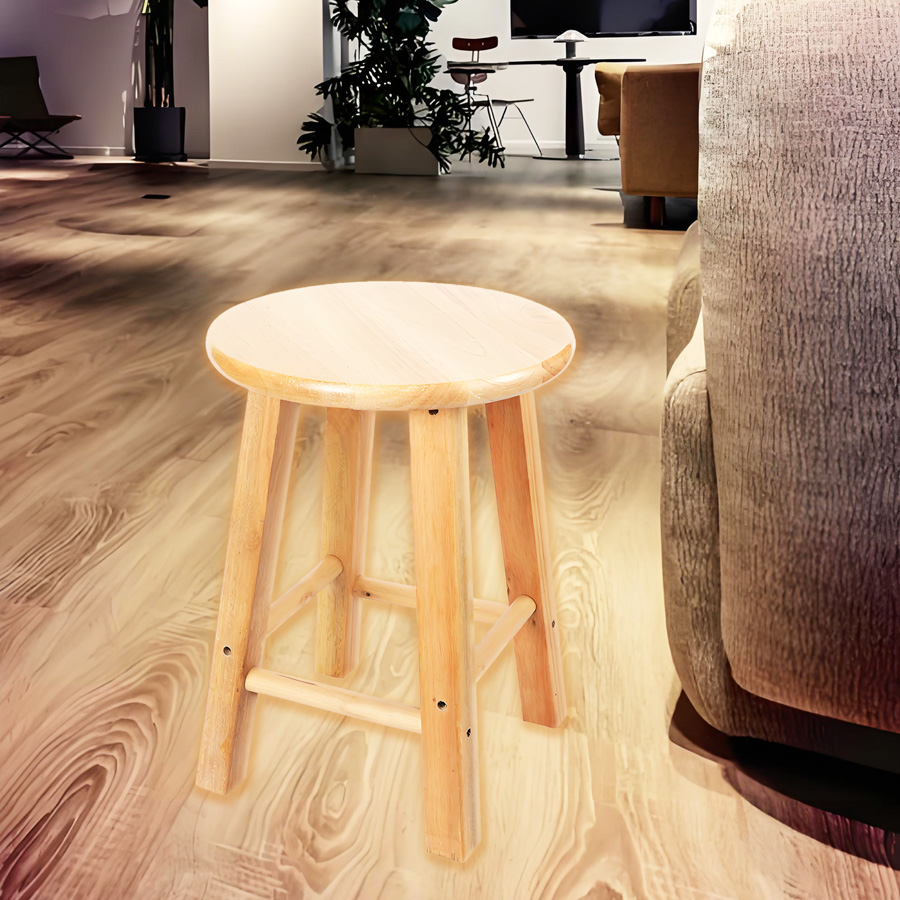

视频教程： https://youtu.be/JAq4rEI5RRE
视频中使用的素材：点击下载>> | 备用下载>>
操作步骤：
通道选择阶段
观察RGB三通道（红/绿/蓝），选择主体与背景对比最强的通道
复制选中的通道副本（通常蓝通道效果最佳）
选区优化阶段
使用色阶工具（Ctrl+L）强化明暗对比
重点调整暗场（黑色滑块）和高光（白色滑块）
配合快速选择工具进行选区微调
合成处理阶段
反向选区（Ctrl+Shift+I）后复制到新图层
添加投影/外发光等图层样式增强立体感
通过曲线工具（Ctrl+M）调整整体亮度
关键技巧：通道选择时需注意主体边缘的完整性，色阶调整建议分多次小幅度调节。合成阶段推荐将图层转换为智能对象，便于非破坏性编辑。最终效果应呈现边缘自然过渡，无明显白边或残留背景色。
以下是抠凳子成品效果
